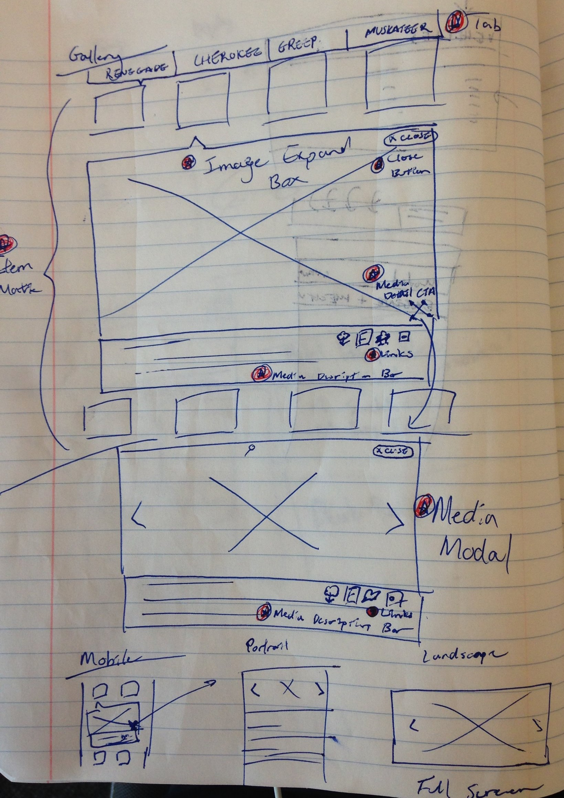

Crafting a Responsive Design System for an Enterprise CMS -
Creating a 'Squarespace' for Corporate
Context and Problem
-
Fiat Chrysler Automotives
- 5 main international brands operating independently. This resulted in a design inconsistenices, unalignment, and slow turnaround time to update basic vehicle pages along with the inability to scale to more quickly re-design complex tools (such as Finding a Dealer on a map, or Scheduling a Test Drive).
My Role
-
Architecting components for brand teams designed responsively across 4 breakpoints - Desktop, Tablet, Phablet, Mobile
- This involved gathering of user requirements, determining brand and user value, performing a competitive experience analysis and determining if the component aligns with the philosophy of the design system (such re-using previous subcomponents, re-using defined colors, fonts, and if it should be made as an existing variation or a new component altogether).
- The design of a component enables speed and velocity when authoring content. An authored image only needs to be defined once and it will automatically adjust accordingly maintaining its aspect ratio on smaller breakpoints. The same goes for font sizes and subcomponents like an arrow.
-
Whiteboarding sessions were held for components in conjunction with visual designers
and developers. Whiteboarding replaced the need to make wires for many components. Any issues
with UX, Development, or Visual Design are discussed at this stage.
- Because of a componentized framework within a design system, we must always design for the worst case scenario from the content authors perspective (shoving as much content into the component) and consider the systems requirements hosted from FCA server-side (render times, load speeds, number of image combinations for a color, wheel and vehicle model variation).
- On the FCA Product Team, I work in tandem with the Visual Designer side-by-side and go straight from the whiteboarding phase directly to visual design. Wires are made for complex components, and interactions not defined in the design system framework. Even when wires are made, they are usually high level because the most of it has already been defined at the component framework level.
- We start off by documenting the general structure of a component where documentation is done by linking subcomponents with a complex component design. Attributes in components can inherit or be specified by the CMS author.
-
The example below is a component map made for a Feature Panel. A feature panel
inherits traits from subcomponents such as a display media and is composed of other
subcomponents such as the description block. The description block has its own
set of unique attributes. The component map provides a high level overview of the component structure.

To simplify things for developers and QA teams, visual annotations are made:
Front-end requirements would be synced and aligned with back-end requirements.
Accessibility requirements are then defined such as specifying the Aria-Live region of where a screenreader would read out to a user where there would occur an action or state change.
-

Challenges
-
Brands teams not understanding a design system
- Brands did not realize components are all interconnected. One change permeates throughout the rest of the experience for other brands. A change to a subcomponent can also break other components that are dependent on the subcomponent. For example, if a team wanted to change the core functionality of a component, they didn't realize it would effect other brands using the same component. I mitigated this by continuously communicating with the brand teams and put myself forward as the go-to person for design system questions.
-
There are some components where content requirements or asset sizing cause problems on smaller breakpoints.
An example is the hero. On Desktop, the image is long and wide but on mobile, the same image would not appear well.
To compensate for this, the team modified the hero be adaptive on smaller breakpoints to be tall and narrow.
Hero Image that is used on all breakpoints in our Responsive Hero:
Hero Image designed to be adaptive:

- Working with developers in India present unique challenges to time zones and cultural differences. When we received the platform back, there were large gaps in the expectation of quality. The design team operated under the assumption that the development team would implement assumed features. For example, if a tab is in its selected state, selecting another tab should move the selected state to it. Another example, the hand icon should appear when hovering over an interactive element on Desktop. But this did not happen when we received the component back. I've since learned to be as prescriptive as possible and operate under no assumptions for developers. This has yielded the highest quality of work.
- Unfortunately, this was a problem I could not overcome as the client was unwilling to invest money into user testing. As a result, many of our designs were only validated internally and largely by the product owners client side.
Results
- A consistent experience across 5 brands completed within a year. My manager put it best. Since we were going so fast, it was like flying an airplane but building it at the same time. Click through rates jumped drastically but most importantly - speed of execution multiplied. This saved huge amounts of effort in terms of development, content creation, and design. Strategically, it allowed FCA to focus more efforts on vehicle tools to offer user value, campaigns, launches, etc.
- Here are the same 3 components, on Desktop, Tablet, and Mobile, used in 4 different locations on the home page for Jeep, Fiat, Chrysler, and RamTrucks. It takes a content author seconds to author each component or to copy and put it on another page.

Chrysler - Desktop Home Page

Fiat - Tablet Home Page

RamTrucks - Mobile Home Page